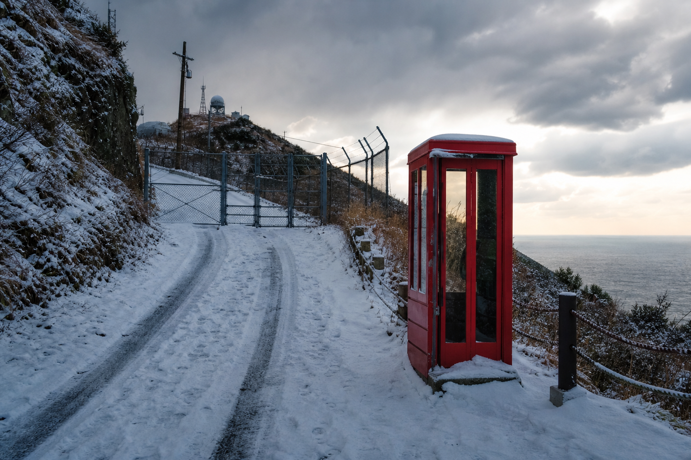
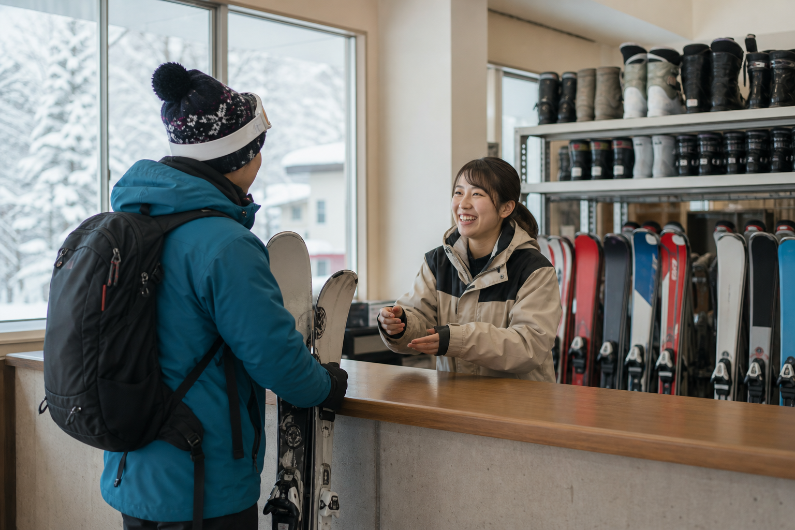
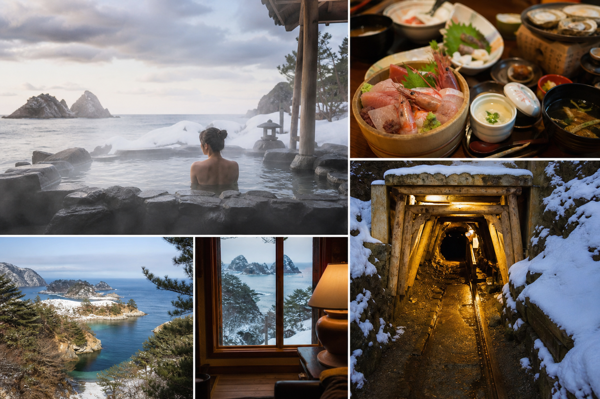

防衛道路アクセス
航空自衛隊佐渡分屯基地の管理道路を抜けて辿り着く、全国でも類を見ない入山儀式。赤い電話ボックスから自衛隊へ連絡し、許可を得てゲレンデへ——秘境感そのものが体験価値。
通行ガイドを見る更新 2/7 8:45
リフト
運行中
ペア1基＋ハンガー3
フェリー
両津港便
佐渡汽船で確認
コース
5/5 開放
最長750m
防衛道路
要許可
チェーン携行必須
Book & Go
スキー・スノーボードセット各¥1,000、ウェア各¥1,000。フェリー来島の島外客も、両津港からレンタカーで直行——帽子・グローブは持参を。
リフト券・レンタル・金井温泉入浴券をセットにした「佐渡雪遊び周遊パス」の事前Web販売——現金のみの窓口負担を軽減。
手ぶらプランを見る

01
両津港
新潟港からフェリー。防衛道路ルールを事前確認
02
秘境滑走
自衛隊許可を得て登坂。5コースで雪遊び
03
温泉
金井温泉 金北の里でアフタースキー
04
サドメシ
長三郎・金井西洋館——島の食で締め
Access
両津港から車で約50分 · 防衛道路通行要自衛隊許可
TEL 0259-63-4050